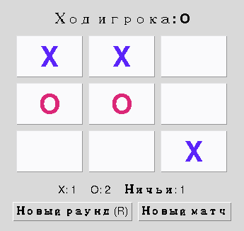

Глава 17 · Финальные штрихи
Tic-Tac-Toe Pro — полная программа и итоги главы
Та же игра, что и в разделе 17.6 — но теперь с моделью, правилами, тестами и архитектурой, которые выдержат рост проекта.
Итоговая программа

Файл целиком, самодостаточный и без невидимых зависимостей от других уроков:
projects/tkinter/tic-tac-toe/tic_tac_toe.py
tic_tac_toe.py — структура
WINNING_LINES = (...)
def find_winner(board): ...
def is_draw(board): ...
@dataclass
class GameState:
...
class TicTacToeApp:
def __init__(self, root, *, persist_scores=False): ...
def build_ui(self): ...
def build_board(self, outer): ...
def attempt_move(self, index): ...
def on_cell_enter(self, index): ...
def on_cell_leave(self, index): ...
def on_key(self, event): ...
def render(self): ...
def new_round(self): ...
def new_match(self): ...
def pulse_winning_line(self, tick=0): ...
def main():
root = tk.Tk()
app = TicTacToeApp(root)
root.mainloop()
if __name__ == "__main__":
main()Запустите игру у себя
python tic_tac_toe.py в терминале — либо кнопкой Run в VS Code или PyCharm. Сравните с tic_tac_toe_basic.py (раздел 17.6) — тот же результат для игрока, совершенно другая внутренняя архитектура.Чек-лист готовой игры
MODEL
- поле (
board) отделено от виджетов - текущий игрок — явное поле состояния
- terminal state (game_over/winner) — явное поле, а не вывод из виджетов
RULES
- невалидные ходы отклоняются и не переключают игрока
- все 8 выигрышных линий протестированы для X и O
- ничья проверяется ПОСЛЕ победы
UI
- статус хода виден всегда
- победитель виден не только по цвету
- поле адаптивно к изменению размера окна
- клавиатура работает
АРХИТЕКТУРА
- callback-и короткие: валидация → модель → render
- чистые правила тестируются без окна
- render() задаёт канонический вид из модели; временные эффекты накладываются поверх
Мост к главе 18
Дальше: КУДА, а не только КТО и ЧТО
В этой игре события помогли нам понять, КТО действовал и ЧТО должно произойти. Дальше события мыши дадут нам ещё и КООРДИНАТЫ —
event.x и event.y. В следующей главе координаты мыши станут основой рисования на Canvas.Практика: Tic-Tac-Toe Pro целиком
Модуль tkinter открывает нативное окно Python — выполните локально в VS Code, PyCharm или Jupyter
Практика выполняется локально
Итоги главы 17
Что мы построили и чему научились
- Событие, callback, command и binding — четыре разных, связанных понятия; callback из command= обычно не получает Event; callback, зарегистрированный через bind(), получает его.
- command= описывает основное действие Button; bind() — явную реакцию на конкретное событие мыши или клавиатуры. Встроенные способы активации Button зависят от класса виджета и платформы, поэтому command и bind не следует считать взаимозаменяемыми.
- Игровое СОСТОЯНИЕ — не то же самое, что виджеты, которые его отображают: наведение мыши доказывает это нагляднее всего.
- find_winner(board) и is_draw(board) — чистые функции, тестируемые без единого открытого окна; порядок «сначала победа, потом ничья» — часть правил, а не деталь реализации.
- Мышь (command=) и клавиатура (bind на root) сходятся в одной функции attempt_move() — правила игры существуют только в одном месте.
- render() задаёт каноническое базовое отображение ИЗ модели. Наведение мыши и короткий акцент победы временно меняют представление поверх него, не меняя GameState; следующий render() снова полностью восстанавливает вид из модели.
- Ненавязчивые визуальные эффекты (hover-превью, подсветка линии, пульс победы) стоят на прочной архитектуре — они возможны именно потому, что модель отделена от вида.